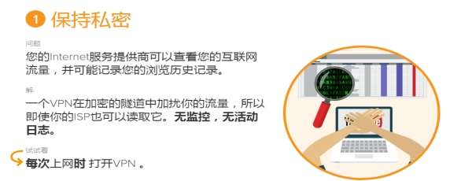
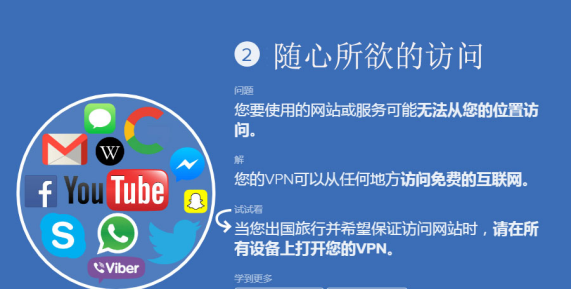
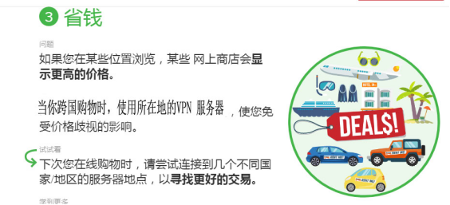
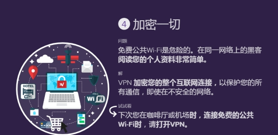
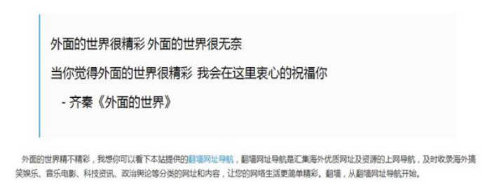

科学上网加速代理服务器(SHADOWSOCKS)
上网为何使用VPN：影梭（shadowsocks）
    Shadowsocks特点：
- 科学上网；
Shadowsocks是支持这一上网行为最重要的利器；
- 1.省电，在电量查看里几乎看不到它的身影；
- 2.支持开机自启动，且无需手动重连，方便网络频繁切换的小伙伴；
- 3.安全和速度的保证；
- 4.支持区分国内外流量，智能模式；
- 5.可对应用设置单独代理；
- 用户感受：
- 随机启动24小时后台运行，占内存10MB以内，基本不怎么耗电，跟人直接置身墙外使用手机的感受差不多。